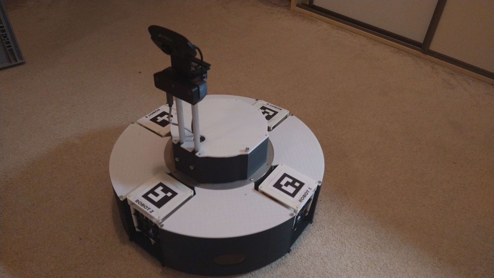
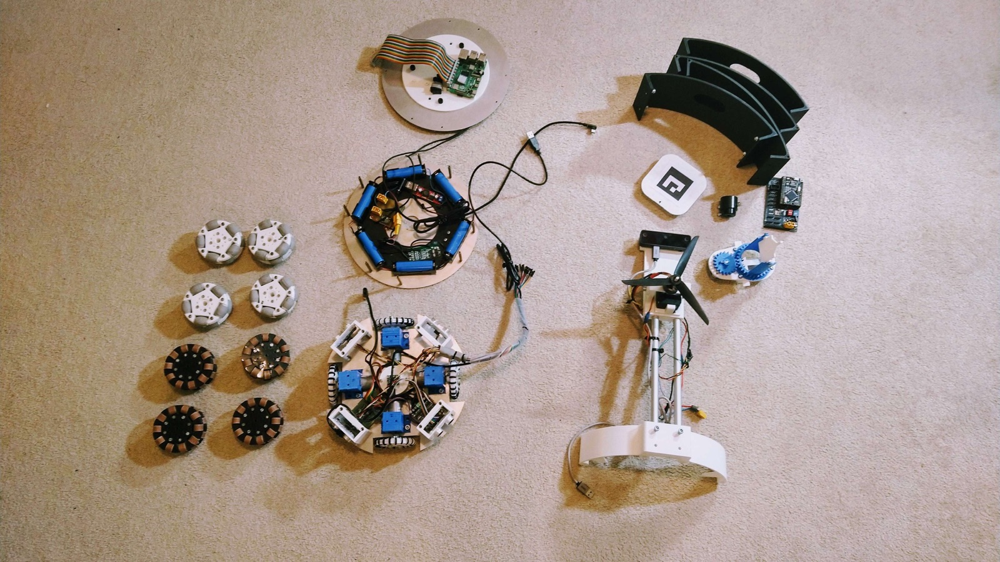
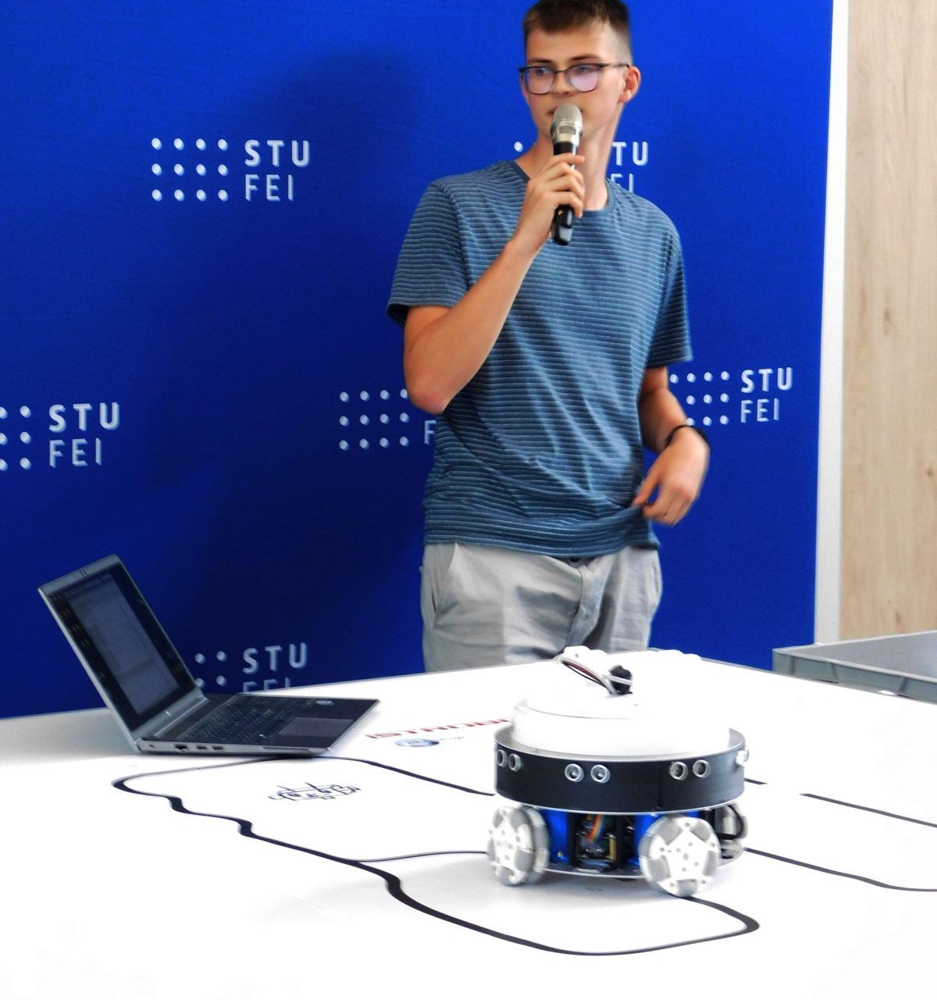

MARVIN
In our work we dealt with a modular omnidirectional robot with elements of machine vision. We started from the theory of omnidirectional motion and from the ways such robots are built. The aim was to create a robotic system with a wide range of uses. In the development we dealt in detail with the mechanical, electronic and software part of the robot we were building. A substantial part of the mechanics is 3D printing, and with it we also made our own omnidirectional wheels. Into the mechanical part we had designed, we gradually selected and designed the electronics. For the main control we chose a freely available Arduino. To power the system we made a battery of three Li-ion cells. The mechanical part and the electronic part are both designed so that we can modify them easily and add accessories to the robot, for example a jack. Once the mechanical part was assembled and the electronics connected, we started on the software. We made it by programming the Arduino and by adding machine vision with an OpenMV H7 camera. The camera gave the robot the ability to work and to find its way in a real environment. The result of our work is a fully modular robotic system.

Robots are today continually brought into new fields as a way to speed processes up or to raise their efficiency. A process can be sped up by joining several robots into what is called a swarm. Such a swarm is quite hard to control when its activity has to be decided in real time. The aim of my project was to study and build a system, or systems, for controlling robotic swarms, able to decide the swarm’s activity in real time, and also to build an experimental swarm on which I could test different tasks. I designed the swarm robot, the agent (90×90×120 mm), as a structure of PCB floors with a two-wheel chassis. A swarm can also include a leader robot, which can for example store the agents or do some other job in the swarm. I designed that robot as a modular omnidirectional robot (chassis 250×250×150 mm) which, after a suitable modification, can hold up to four agents. The leader can give the agents data from sensors, for example a lidar or an OAK-D Lite camera. The camera lets the robot use machine vision, and on it I tested freely available models (MobileNet SSD, YOLO v5) as well as my own. After the swarm hardware was built I started programming it. I studied publications on swarms. I made subsystems for voting, that is for deciding, for communication, both decentralised and centralised, and for control, A* and a reinforcement-learning neural network. I then experimented with these methods and tuned them on the swarm. I found the position of each member of the swarm with ArUco markers. The result is methods and systems for controlling robotic swarms, which I plan in the near future to put onto a real swarm that can be used in the real world.

